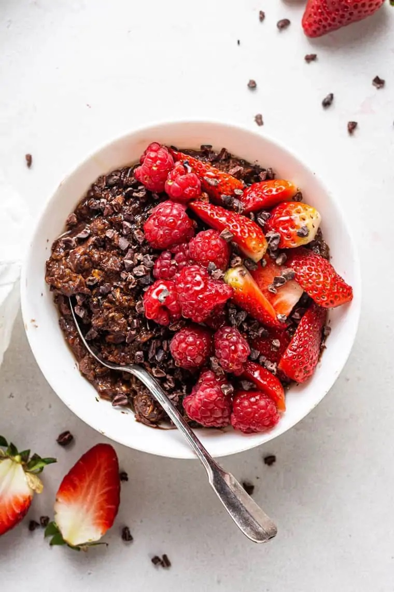

Protein Cocoa Pebbles

Description
When you read the title and saw "Cocoa Pebbles", you might think, how is Cocoa Pebbles healthy?
This is a recipe for an oat-based breakfast alternative. It gives a very similar taste to Cocoa Pebbles,
BUT much healthier!
Ingredients
To create this healthy and beautiful Protein Cocoa Pebbles dish, all you need is the following:
- 1 cup of oat
- 1 and a half cup of milk of your choice, such as almond milk
- 1 scoop of protein powder of your choice
- 1 tablespoon of sweetener of your choice, such as honey
- 1 tablespoon of cocoa powder
- 1 tablespoon of peanut butter
Steps
- Add 1 cup of oat into a bowl
- add 1 and a half cup of milk of your choice into the bowl. Microwave for 2 minutes.
- Add 1 scoop of protein powder, 1 tablespoon of sweetener of your choice, 1 tablespoon of cocoa powder
and 1 tablespoon of peanut butter.
- Stir until all are mixed well.
- Enjoy!